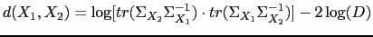
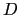
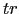

Next: Combination of Clustering Methods Up: Hierarchical Clustering Techniques Previous: Bottom-up Clustering Techniques Contents
In the current literature there are fewer systems that start from one cluster and iteratively split until the stopping criterion is met than the previously presented systems, doing otherwise.
In Johnson and Woodland (1998) a top-down clustering method is proposed for speaker clustering towards ASR, and in Johnson (1999) and Tranter and Reynolds (2004) it is applied to speaker diarization. The algorithm splits the data iteratively into four sub-clusters and allows for merging clusters that are very similar to each other. In Johnson and Woodland (1998) it proposes two different implementations of the algorithm. On one hand it proposes an MLLR likelihood optimization technique to obtain resulting clusters well adapted to the ASR MLLR adaptation step. On the other hand it proposes the Arithmetic Harmonic Sphericity (AHS) metric (Bimbot and Mathan, 1993) to assign speech segments to the created sub-clusters at each stage, and uses a minimum occupancy stopping criterion. The AHS is defined for single Gaussian models as
|  | (2.22) |
where  is the dimensionality of the data and  is the trace function.
In Johnson (1999) and Tranter and Reynolds (2004) the AHS-based algorithm is used for speaker diarization and the stopping criterion is changed to be a cost-based function depending on several criteria.
In Meignier et al. (2001) and Anguera and Hernando (2004a) an initial cluster is trained with all the acoustic data available. Iterative decoding/MAP adaptation of new models is performed where new clusters are split using a likelihood metric averaged over a window. The variation of the overall likelihood of the data given all models is used as a stopping criterion. In Anguera and Hernando (2004a) a similar approach is followed and a repository model is further introduced to improve the purity of the created clusters.
user 2008-12-08